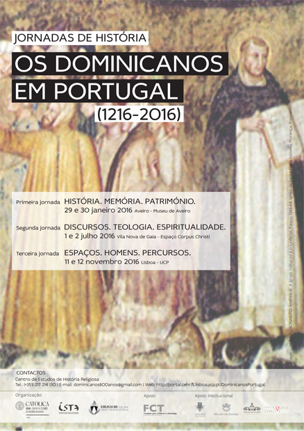

Programa
O programa é constituído pelas seguintes atividades:
- 1ª jornada: História. Memória. Património (Aveiro, 29-30 de janeiro 2016)
- 2ª jornada: Discursos. Teologia. Espiritualidade (Vila Nova de Gaia, 1-2 de julho 2016)
- 3ª jornada: Espaços. Homens. Percursos (Lisboa, 11-12 de novembro 2016)
